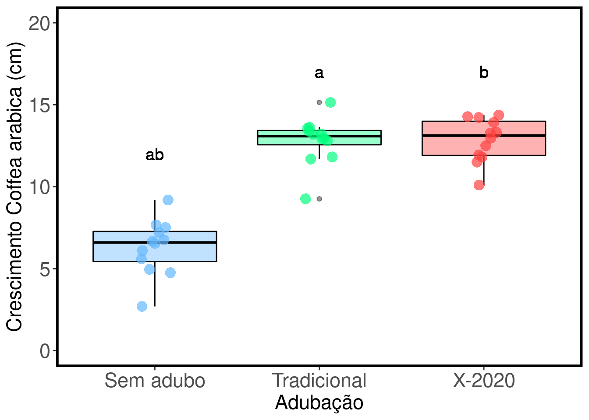

Capítulo 3 Estimadores de Riqueza
3.1 Backgorund da análise
Uma vez que determinar o número total de espécies numa área é praticamente impossível, principalmente em regiões com alta riqueza de espécies, os estimadores são úteis para extrapolar a riqueza observada e tentar estimar a riqueza total através de uma amostra incompleta de uma comunidade biológica (Walther & Moore 2005). Neste capítulo serão considerados os estimadores não paramétricos que usam informações da frequencia de espécies raras na comunidade (Gotelli & Chao 2013). Isto porque tanto os testes paramétricos que tentam determinar os parâmetros de uma curva usando o formato da curva de acumulação de espécies (e.g. equação logística, Michaelis-Menten) quanto os testes que usam a frequencia do número de indivíduos para enquadrá-las em uma das distribuições de abundância das espécies (e.g. distribuições log-séries, log-normal) não funcionam muito bem com dados empíricos (Gotelli & Chao 2013). Para mais detalhes sobre os testes paramétricos veja Magurran (2004) e Colwell (2019).
3.1 Quatro características para um bom estimador de riqueza (Chazdon et al. 1998; Horter et al. 2006):
- Independência do tamanho da amostra (quantidade de esforço amostral realizado);
- Insensibilidade a diferentes padrões de distribuições (diferentes equitabilidades);
- Insensibilidade em relação à ordem das amostragens;
- Insensibilidade à heterogeneidade entre as amostras usadas entre estudos.
3.2 Estimadores baseados na abundância das espécies
3.2.1 CHAO 1 - (Chao 1984, 1987):
Estimador simples do número absoluto de espécies em uma comunidade. É baseado no número de espécies raras dentro de uma amostra.
\[Chao_{1} = S_{obs} + \left(\frac{n-1}{n}\right)\frac{F_1(F_1-1)}{2(F_2+1)}\]
onde:
Sobs = o número de espécies na comunidade,
n = número de amostras,
F1 = número de espécies observadas com abundância de um indivíduo (espécies singleton),
F2 = número de espécies observadas com abundância de dois indivíduos (espécies doubletons).
O valor de Chao 1 é máximo quando todas as espécies menos uma são únicas (singleton). Neste caso, a riqueza estimada é aproximadamente o dobro da riqueza observada.
3.2.1.1 Exemplo prático - Chao 1
3.2.1.1.1 Explicação dos dados
Neste exemplo usaremos os dados de 17 espécies de anuros amostradas em 14 dias de coletas de campo em um habitat reprodutivo localizado na região noroeste do estado de São Paulo, Brasil.
Pergunta:
Quantas espécies a mais poderiam ser amostradas caso aumentasse o esforço amostral?
Predições
- O número de espécies estimadas é similar ao número de espécies observada;
- O número de espécies estimadas é maior do que o número de espécies observada.
Variáveis
- Variáveis preditoras
- matriz ou vetor com as abundâncias das espécies de anuros registradas em uma habitat reprodutivo
Checklist
- Verificar se a sua matriz está com as espécies nas colunas e as amostragens nas linhas
- Verificar se os dados são de abundância e não presença e ausência
3.2.2 Análise
Calculo do estimador de riqueza - Chao 1
library(ecodados)
library(vegan)
dados_coleta <- poca_anuros
est_chao1 <- estaccumR(dados_coleta, permutations = 100)
summary(est_chao1, display = "chao")## $chao
## N Chao 2.5% 97.5% Std.Dev
## Dia_4 1 6.553333 3.000 12.33333 2.341092
## Dia_6 2 9.323762 4.950 15.52500 2.511524
## Dia_7 3 10.862500 7.000 15.00000 2.292677
## Dia_3 4 12.315833 8.000 20.00000 2.917479
## Dia_8 5 13.069167 9.000 18.57500 2.538620
## Dia_5 6 13.971667 10.475 21.05000 2.597704
## Dia_10 7 14.755000 11.000 22.00000 2.857586
## Dia_11 8 15.546667 11.475 22.00000 2.897237
## Dia_9 9 16.428333 12.000 22.00000 2.917521
## Dia_12 10 17.123333 13.000 22.00000 2.782685
## Dia_14 11 17.803333 13.000 22.00000 2.533765
## Dia_13 12 18.470000 14.500 22.00000 2.057040
## Dia_1 13 19.355000 15.500 20.00000 1.427180
## Dia_2 14 20.000000 20.000 20.00000 0.000000
##
## attr(,"class")
## [1] "summary.poolaccum"Visualizar os resultados com intervalo de confiança de 95%.
library(ggplot2)
# preparando os dados para fazer o gráfico
resultados <- summary(est_chao1, display = c("S", "chao"))
res_chao <- cbind(resultados$chao[,1:4], resultados$S[,2:4])
res_chao <- as.data.frame(res_chao)
colnames(res_chao) <- c("Amostras", "Chao", "C_inferior", "C_superior", "Riqueza",
"R_inferior", "R_superior")
# comando para o gráfico
ggplot(res_chao, aes(y = Riqueza, x = Amostras)) +
geom_point(aes(y = Chao, x = Amostras + 0.1), size = 5, color = "blue", alpha = 1) +
geom_point(aes(y = Riqueza, x = Amostras), size = 5, color = "red", alpha = 1) +
geom_line (aes(y = Chao, x = Amostras), color = "blue") +
geom_line (aes(y = Riqueza, x = Amostras), color = "red") +
geom_linerange(aes(ymin = C_inferior, ymax = C_superior, x = Amostras + 0.1),
color = "blue") +
geom_linerange(aes(ymin = R_inferior, ymax = R_superior, x = Amostras), color = "red") +
ylab ("Estimador de riqueza - Chao 1") +
xlab ("Número de amostras") +
scale_x_continuous(limits = c(1,15), breaks=seq(1,15,1)) +
geom_point(y= 7.5, x = 9, size = 5, color = "blue", alpha = 1) +
geom_point(y= 5.9, x = 9, size = 5, color = "red", alpha = 1) +
geom_label( y = 7.5, x = 12, label = "Riqueza estimada - Chao 1") +
geom_label( y = 5.9, x = 11.3, label = "Riqueza observada")
3.2.2.1 Interpretação dos resultados
Com base no número de espécies raras (singletons e doubletons), o estimador Chao 1 indica a possibilidade de encontrarmos mais três espécies caso o esforço amostral fosse maior e não mostra tendência de estabilização da curva em uma assíntota.
3.2.3 ACE - Abundance-based Coverage Estimador (Chao & Lee 1992, Chao et al. 2000):
Este método trabalha com a abundância das espécies raras (i.e. abundância baixa). Entretanto, diferente do estimador anterior, esse método permite ao pesquisador determinar os limites para os quais uma espécie seja considerada rara. Em geral, são consideradas raras espécies com abundância entre 1 e 10 indivíduos. A riqueza estimada pode variar conforme se aumente ou diminua o limiar de abundância, e infelizmente não existem critérios biológicos definidos para a escolha do melhor intervalo.
\[ACE = S_{abund} + \frac{S_{rare}}{C_{ace}} + \frac{F_1}{C_{ace}}Y_{ace}^2\]
onde:
\[Y_{ace}^2 = max \left[\frac{S_{rare}}{C_{ace}}\frac{\sum_{i=i}^{10}i(i-1)F1}{(N_{rare})({N_{rare} - 1)}}-1,0\right]\]
\[C_{ace} = 1 - \frac{F1}{N_{rare}}\]
\[N_{rare} = \sum_{i=1}^{10}iF_i\]
Não precisa fazer cara feia, é óbvio que iremos usar o programa para fazer esses cálculos.
3.2.3.1 Exemplo prático - ACE
3.2.3.1.1 Explicação dos dados
Usaremos os mesmos dados de 17 espécies de anuros amostradas em 14 dias de coletas de campo em um habitat reprodutivo localizado na região noroeste do estado de São Paulo, Brasil.
Pergunta:
Quantas espécies a mais poderiam ser amostradas caso aumentasse o esforço amostral?
Predições
- O número de espécies estimadas é similar ao número de espécies observada;
- O número de espécies estimadas é maior do que o número de espécies observada.
Variáveis
- Variáveis preditoras
- matriz ou vetor com as abundâncias das espécies de anuros registradas em uma habitat reprodutivo
Checklist
- Verificar se a sua matriz está com as espécies nas colunas e as amostragens nas linhas
- Verificar se os dados são de abundância e não presença e ausência
3.2.4 Análise
Calculo do estimador de riqueza - ACE
library(vegan)
dados_coleta <- poca_anuros
est_ace <- estaccumR(dados_coleta, permutations = 100)
summary(est_ace, display = "ace")## $ace
## N ACE 2.5% 97.5% Std.Dev
## Dia_11 1 7.167554 3.54519 13.71429 2.921909
## Dia_1 2 10.287368 6.00000 19.25000 3.356724
## Dia_4 3 12.008397 8.00000 18.33414 2.935757
## Dia_6 4 12.964276 9.00000 18.03820 2.464902
## Dia_2 5 14.242632 10.00000 20.52223 2.913977
## Dia_12 6 14.910842 10.17960 21.19861 3.086748
## Dia_13 7 15.838369 10.16177 22.08299 3.268930
## Dia_5 8 17.136237 11.68050 22.69653 3.180675
## Dia_9 9 18.314103 12.61361 24.93470 3.364781
## Dia_8 10 19.348713 13.37688 25.28994 3.526671
## Dia_7 11 21.030223 13.59085 25.72368 3.747792
## Dia_14 12 22.672619 14.54294 25.72368 3.458939
## Dia_3 13 23.974743 17.67647 25.72368 2.257901
## Dia_10 14 24.703704 24.70370 24.70370 0.000000
##
## attr(,"class")
## [1] "summary.poolaccum"Visualizar os resultados com intervalo de confiança de 95%
library(ggplot2)
# preparando os dados para fazer o gráfico
resultados_ace <- summary(est_ace, display = c("S", "ace"))
res_ace <- cbind(resultados_ace$ace[,1:4], resultados_ace$S[,2:4])
res_ace <- as.data.frame(res_ace)
colnames(res_ace) <- c("Amostras", "ACE", "ACE_inferior", "ACE_superior", "Riqueza",
"R_inferior", "R_superior")
# comando para o gráfico
ggplot(res_ace, aes(y = Riqueza, x = Amostras)) +
geom_point(aes(y = ACE, x = Amostras + 0.1), size = 5, color = "blue", alpha = 1) +
geom_point(aes(y = Riqueza, x = Amostras), size = 5, color = "red", alpha = 1) +
geom_line (aes(y = ACE, x = Amostras), color = "blue") +
geom_line (aes(y = Riqueza, x = Amostras), color = "red") +
geom_linerange(aes(ymin = ACE_inferior, ymax = ACE_superior, x = Amostras + 0.1),
color = "blue") +
geom_linerange(aes(ymin = R_inferior, ymax = R_superior, x = Amostras), color = "red") +
ylab ("Estimador de riqueza - ACE") +
xlab ("Número de amostras") +
scale_x_continuous(limits = c(1,15), breaks=seq(1,15,1)) +
geom_point(y= 7.5, x = 9, size = 5, color = "blue", alpha = 1) +
geom_point(y= 5.9, x = 9, size = 5, color = "red", alpha = 1) +
geom_label( y = 7.5, x = 11.7, label = "Riqueza estimada - ACE") +
geom_label( y = 5.9, x = 11.3, label = "Riqueza observada")
3.2.4.1 Interpretação dos resultados
Com base no número de espécies raras (abundância menor que 10 indivíduos - default), o estimador ACE indica a possibilidade de encontrarmos mais sete espécies caso o esforço amostral fosse maior e não mostrou tendência de estabilição da curva em uma assíntota.
3.3 Estimadores baseados na incidência das espécies
3.3.1 CHAO 2 - (Chao 1987):
De acordo com Anne Chao, o estimador Chao 1 pode ser modificado para uso com dados de presença/ausência levando em conta a distribuição das espécies entre amostras. Neste caso é necessário somente conhecer o número de espécies encontradas em somente uma amostra e o número de espécies encontradas exatamente em duas amostras. Essa variação ficou denominada como Chao 2:
\[Chao_{2} = S_{obs} + \left(\frac{m-1}{m}\right)\left(\frac{Q_1(Q_1-1)}{2(Q_2 + 1}\right)\]
onde:
Sobs = o número de espécies na comunidade,
m = número de amostragens,
Q1 = número de espécies observadas em uma amostragem (espécies uniques),
Q2 = número de espécies observadas em duas amostragens (espécies duplicates).
O valor de Chao2 é máximo quando as espécies menos uma são únicas (uniques). Neste caso, a riqueza estimada é aproximadamente o dobro da riqueza observada. Colwell & Coddington (1994) encontraram que o valor de Chao 2 mostrou ser o estimador menos enviesado para amostras com tamanho pequeno.
3.3.1.1 Exemplo prático - Chao 2
3.3.1.1.1 Explicação dos dados
Usaremos os mesmos dados de 17 espécies de anuros amostradas em 14 dias de coletas de campo em um habitat reprodutivo localizado na região noroeste do estado de São Paulo, Brasil.
Pergunta:
Quantas espécies a mais poderiam ser amostradas caso aumentasse o esforço amostral?
Predições
- O número de espécies estimadas é similar ao número de espécies observada;
- O número de espécies estimadas é maior do que o número de espécies observada.
Variáveis
- Variáveis preditoras
- matriz ou vetor com a incidência das espécies de anuros registradas em uma habitat reprodutivo
Checklist
- Verificar se a sua matriz está com as espécies nas colunas e as amostragens nas linhas
3.3.2 Análise
Calculo do estimador de riqueza - Chao 2
library(vegan)
dados_coleta <- poca_anuros
est_chao2 <- poolaccum(dados_coleta, permutations = 100)
summary(est_chao2, display = "chao")## $chao
## N Chao 2.5% 97.5% Std.Dev
## [1,] 3 13.78616 8.126667 22.08750 3.573571
## [2,] 4 15.62169 9.093750 33.75312 5.986901
## [3,] 5 16.41562 9.723000 33.60000 6.149983
## [4,] 6 17.97708 11.745833 30.17500 5.750128
## [5,] 7 19.40321 11.857143 37.00000 6.719229
## [6,] 8 22.57875 12.471094 40.04531 7.591962
## [7,] 9 24.64926 13.680556 41.88889 7.891749
## [8,] 10 25.96575 13.847500 42.20000 7.370873
## [9,] 11 27.70591 15.401136 40.94318 6.519492
## [10,] 12 29.63271 18.382292 39.45833 6.075760
## [11,] 13 31.23308 22.384615 36.76538 4.544094
## [12,] 14 33.71429 33.714286 33.71429 0.000000
##
## attr(,"class")
## [1] "summary.poolaccum"Visualizar os resultados com intervalo de confiança de 95%
library(ggplot2)
# preparando os dados para fazer o gráfico
resultados_chao2 <- summary(est_chao2, display = c("S", "chao"))
res_chao2 <- cbind(resultados_chao2$chao[,1:4], resultados_chao2$S[,2:4])
res_chao2 <- as.data.frame(res_chao2)
colnames(res_chao2) <- c("Amostras", "Chao2", "C_inferior", "C_superior", "Riqueza",
"R_inferior", "R_superior")
# comando para o gráfico
ggplot(res_chao2, aes(y = Riqueza, x = Amostras)) +
geom_point(aes(y = Chao2, x = Amostras + 0.1), size = 5, color = "blue", alpha = 1) +
geom_point(aes(y = Riqueza, x = Amostras), size = 5, color = "red", alpha = 1) +
geom_line (aes(y = Chao2, x = Amostras), color = "blue") +
geom_line (aes(y = Riqueza, x = Amostras), color = "red") +
geom_linerange(aes(ymin = C_inferior, ymax = C_superior, x = Amostras + 0.1),
color = "blue") +
geom_linerange(aes(ymin = R_inferior, ymax = R_superior, x = Amostras), color = "red") +
ylab ("Estimador de riqueza - Chao 2") +
xlab ("Número de amostras") +
scale_x_continuous(limits = c(1,15), breaks=seq(1,15,1)) +
geom_point(y= 9.8, x = 10, size = 5, color = "blue", alpha = 1) +
geom_point(y= 7.7, x = 10, size = 5, color = "red", alpha = 1) +
geom_label( y = 9.8, x = 12.95, label = "Riqueza estimada - Chao 2") +
geom_label( y = 7.7, x = 12.3, label = "Riqueza observada")
3.3.2.1 Interpretação dos resultados
Com base no número de espécies raras (uniques e duplicates), Chao 2 estimou a possibilidade de encontrarmos mais dezesseis espécies caso o esforço amostral fosse maior e não mostrou tendência de estabilização da curva em uma assíntota.
3.3.3 JACKKNIFE 1 (Burnham & Overton 1978, 1979):
Este estimador baseia-se no número de espécies que ocorrem em somente uma amostra (Q1).
\[S_{jack1} = S_{obs} + Q1\left(\frac{m - 1}{m}\right)\]
onde:
Sobs = o número de espécies na comunidade,
Q1 = número de espécies observadas em uma amostragem (espécies uniques),
m = número de amostragens.
Palmer (1990) verificou que Jackknife 1 foi o estimador mais preciso e menos enviesado comparado a outros métodos de extrapolação.
3.3.3.1 Exemplo prático - Jackknife 1
3.3.3.1.1 Explicação dos dados
Usaremos os mesmos dados de 17 espécies de anuros amostradas em 14 dias de coletas de campo em um habitat reprodutivo localizado na região noroeste do estado de São Paulo, Brasil.
Pergunta:
Quantas espécies a mais poderiam ser amostradas caso aumentasse o esforço amostral?
Predições
- O número de espécies estimadas é similar ao número de espécies observada;
- O número de espécies estimadas é maior do que o número de espécies observada.
Variáveis
- Variáveis preditoras
- matriz ou vetor com as abundâncias das espécies de anuros registradas em uma habitat reprodutivo
Checklist
- Verificar se a sua matriz está com as espécies nas colunas e as amostragens nas linhas
3.3.4 Análise
Calculo do estimador de riqueza - Jackknife 1
library(vegan)
dados_coleta <- poca_anuros
est_jack1 <- poolaccum(dados_coleta, permutations = 100)
summary(est_jack1, display = "jack1")## $jack1
## N Jackknife 1 2.5% 97.5% Std.Dev
## [1,] 3 13.67000 9.491667 19.33333 2.717733
## [2,] 4 14.95250 10.500000 20.13125 2.876168
## [3,] 5 15.60800 11.600000 21.23000 2.769082
## [4,] 6 16.30167 11.745833 21.83333 2.835926
## [5,] 7 16.90429 11.857143 22.00000 2.737996
## [6,] 8 17.89250 12.750000 22.25000 2.793109
## [7,] 9 18.81111 12.888889 22.80000 2.756778
## [8,] 10 19.79400 14.800000 23.30000 2.277284
## [9,] 11 20.79273 16.679545 23.36364 2.014974
## [10,] 12 21.56833 16.750000 23.41667 1.874925
## [11,] 13 21.95462 18.692308 23.46154 1.370082
## [12,] 14 22.57143 22.571429 22.57143 0.000000
##
## attr(,"class")
## [1] "summary.poolaccum"Visualizar os resultados com 95% intervalo de confiança
library(ggplot2)
# preparando os dados para fazer o gráfico
resultados_jack1 <- summary(est_jack1, display = c("S", "jack1"))
res_jack1 <- cbind(resultados_jack1$jack1[,1:4], resultados_jack1$S[,2:4])
res_jack1 <- as.data.frame(res_jack1)
colnames(res_jack1) <- c("Amostras", "JACK1", "JACK1_inferior", "JACK1_superior", "Riqueza",
"R_inferior", "R_superior")
# comando para o gráfico
ggplot(res_jack1, aes(y = Riqueza, x = Amostras)) +
geom_point(aes(y = JACK1, x = Amostras + 0.1), size = 5, color = "blue", alpha = 1) +
geom_point(aes(y = Riqueza, x = Amostras), size = 5, color = "red", alpha = 1) +
geom_line (aes(y = JACK1, x = Amostras), color = "blue") +
geom_line (aes(y = Riqueza, x = Amostras), color = "red") +
geom_linerange(aes(ymin = JACK1_inferior, ymax = JACK1_superior, x = Amostras + 0.1),
color = "blue") +
geom_linerange(aes(ymin = R_inferior, ymax = R_superior, x = Amostras), color = "red") +
ylab ("Estimador de riqueza - Jackknife 1") +
xlab ("Número de amostras") +
scale_x_continuous(limits = c(1,15), breaks=seq(1,15,1)) +
geom_point(y= 9.9, x = 9, size = 5, color = "blue", alpha = 1) +
geom_point(y= 8.6, x = 9, size = 5, color = "red", alpha = 1) +
geom_label( y = 9.9, x = 12.5, label = "Riqueza estimada - Jackknife 1") +
geom_label( y = 8.6, x = 11.5, label = "Riqueza observada")
3.3.4.1 Interpretação dos resultados
Com base no número de espécies raras, o estimador Jackknife 1 calculou a possibilidade de encontrarmos mais seis espécies caso o esforço amostral fosse maior e não mostrou tendência de estabilização da curva em uma assíntota.
3.3.5 JACKKNIFE 2 (Burnham & Overton 1978, 1979, Palmer 1991):
Este método basea-se no número de espécies que ocorrem em apenas uma amostra e no número de espécies que ocorrem em exatamente duas amostras.
\[S_{jack2} = S_{obs} + \left[\frac{Q_1(2m - 3)}{m}-\frac{Q_2(m - 2)^2}{m(m-1)}\right]\]
onde:
Sobs = o número de espécies na comunidade,
m = número de amostragens,
Q1 = número de espécies observadas em uma amostragem (espécies uniques),
Q2 = número de espécies observadas em duas amostragens (espécies duplicates).
3.3.5.1 Exemplo prático - Jackknife 2
3.3.5.1.1 Explicação dos dados
Usaremos os mesmos dados de 17 espécies de anuros amostradas em 14 dias de coletas de campo em um habitat reprodutivo localizado na região noroeste do estado de São Paulo, Brasil.
Pergunta:
Quantas espécies a mais poderiam ser amostradas caso aumentasse o esforço amostral?
Predições
- O número de espécies estimadas é similar ao número de espécies observada;
- O número de espécies estimadas é maior do que o número de espécies observada.
Variáveis
- Variáveis preditoras
- matriz ou vetor com as abundâncias das espécies de anuros registradas em uma habitat reprodutivo
Checklist
- Verificar se a sua matriz está com as espécies nas colunas e as amostragens nas linhas
3.3.6 Análise
Calculo do estimador de riqueza - Jackknife 2
library(vegan)
dados_coleta <- poca_anuros
est_jack2 <- poolaccum(dados_coleta, permutations = 100)
summary(est_jack2, display = "jack2")## $jack2
## N Jackknife 2 2.5% 97.5% Std.Dev
## [1,] 3 14.60000 8.412500 21.02500 3.097463
## [2,] 4 15.77500 9.816667 23.35000 3.492908
## [3,] 5 16.28500 9.241250 24.13625 3.916879
## [4,] 6 17.21700 11.621667 25.46833 3.891562
## [5,] 7 18.40190 10.876190 26.21250 4.279375
## [6,] 8 19.64589 11.339286 28.58527 4.437050
## [7,] 9 20.73333 11.948264 29.21840 4.486966
## [8,] 10 22.16089 14.826111 29.45472 4.000529
## [9,] 11 23.67318 15.331591 28.35455 3.653302
## [10,] 12 24.93432 19.323674 28.49242 2.892660
## [11,] 13 26.04955 21.301282 28.60897 2.026387
## [12,] 14 26.92308 26.923077 26.92308 0.000000
##
## attr(,"class")
## [1] "summary.poolaccum"Visualizar os resultados com intervalo de confiança de 95%
library(ggplot2)
# preparando os dados para fazer o gráfico
resultados_jack2 <- summary(est_jack2, display = c("S", "jack2"))
res_jack2 <- cbind(resultados_jack2$jack2[,1:4], resultados_jack2$S[,2:4])
res_jack2 <- as.data.frame(res_jack2)
colnames(res_jack2) <- c("Amostras", "JACK2", "JACK2_inferior", "JACK2_superior", "Riqueza",
"R_inferior", "R_superior")
# comando para o gráfico
ggplot(res_jack2, aes(y = Riqueza, x = Amostras)) +
geom_point(aes(y = JACK2, x = Amostras + 0.1), size = 5, color = "blue", alpha = 1) +
geom_point(aes(y = Riqueza, x = Amostras), size = 5, color = "red", alpha = 1) +
geom_line (aes(y = JACK2, x = Amostras), color = "blue") +
geom_line (aes(y = Riqueza, x = Amostras), color = "red") +
geom_linerange(aes(ymin = JACK2_inferior, ymax = JACK2_superior, x = Amostras + 0.1),
color = "blue") +
geom_linerange(aes(ymin = R_inferior, ymax = R_superior, x = Amostras), color = "red") +
ylab ("Estimador de riqueza - Jackknife 2") +
xlab ("Número de amostras") +
scale_x_continuous(limits = c(1,15), breaks=seq(1,15,1)) +
geom_point(y= 9.9, x = 9, size = 5, color = "blue", alpha = 1) +
geom_point(y= 8.2, x = 9, size = 5, color = "red", alpha = 1) +
geom_label( y = 9.9, x = 12.5, label = "Riqueza estimada - Jackknife 2") +
geom_label( y = 8.2, x = 11.5, label = "Riqueza observada")
3.3.6.1 Interpretação dos resultados
Com base no número de espécies raras, o estimador Jackknife 2 calculou a possibilidade de encontrarmos mais dez espécies caso o esforço amostral fosse maior e não mostrou tendência estabilização da curva em uma assíntota.
3.3.7 BOOTSTRAP (Smith & van Belle 1984):
Este método difere dos demais por utilizar dados de todas as espécies coletadas para estimar a riqueza total, não se restringindo às espécies raras. Ele requer somente dados de incidência. A estimativa pelo bootstrap é calculada somando-se a riqueza observada à soma do inverso da proporção de amostras em que cada espécie ocorre.
\[S_{boot} = S_{obs} + \sum_{k=1}^{S_{obs}}(1-P_k)^m\]
onde:
Sobs = o número de espécies na comunidade,
m = número de amostragens,
Pk = proporção do número de amostras em que cada espécie foi registrada.
3.3.7.1 Exemplo prático - Bootstrap
3.3.7.1.1 Explicação dos dados
Usaremos os mesmos dados de 17 espécies de anuros amostradas em 14 dias de coletas de campo em um habitat reprodutivo localizado na região noroeste do estado de São Paulo, Brasil.
Pergunta:
Quantas espécies a mais poderiam ser amostradas caso aumentasse o esforço amostral?
Predições
- O número de espécies estimadas é similar ao número de espécies observada;
- O número de espécies estimadas é maior do que o número de espécies observada.
Variáveis
- Variáveis preditoras
- matriz ou vetor com as abundâncias das espécies de anuros registradas em uma habitat reprodutivo
Checklist
- Verificar se a sua matriz está com as espécies nas colunas e as amostragens nas linhas
3.3.8 Análise
Calculo do estimador de riqueza - Bootstrap
library(vegan)
dados_coleta <- poca_anuros
est_boot <- poolaccum(dados_coleta, permutations = 100)
summary(est_boot, display = "boot")## $boot
## N Bootstrap 2.5% 97.5% Std.Dev
## [1,] 3 11.94704 8.325926 16.09722 2.0014977
## [2,] 4 12.89066 9.241699 16.57812 2.0073911
## [3,] 5 13.72175 9.691752 17.43599 2.1209035
## [4,] 6 14.41470 10.778721 18.55595 1.9804477
## [5,] 7 15.05410 11.846345 18.56195 1.9971814
## [6,] 8 15.68447 12.236097 19.71529 2.0372651
## [7,] 9 16.43870 12.846979 19.68702 1.8432184
## [8,] 10 17.05759 12.960218 19.70781 1.7592558
## [9,] 11 17.63277 14.195594 19.70283 1.5337753
## [10,] 12 18.29850 15.530162 19.58724 1.3082178
## [11,] 13 18.81198 16.570376 19.59107 0.8844258
## [12,] 14 19.27832 19.278321 19.27832 0.0000000
##
## attr(,"class")
## [1] "summary.poolaccum"Visualizar os resultados com intervalo de confiança de 95%
library(ggplot2)
# preparando os dados para fazer o gráfico
resultados_boot <- summary(est_boot, display = c("S", "boot"))
res_boot <- cbind(resultados_boot$boot[,1:4], resultados_boot$S[,2:4])
res_boot <- as.data.frame(res_boot)
colnames(res_boot) <- c("Amostras", "BOOT", "BOOT_inferior", "BOOT_superior", "Riqueza",
"R_inferior", "R_superior")
# comando para o gráfico
ggplot(res_boot, aes(y = Riqueza, x = Amostras)) +
geom_point(aes(y = BOOT, x = Amostras + 0.1), size = 5, color = "blue", alpha = 1) +
geom_point(aes(y = Riqueza, x = Amostras), size = 5, color = "red", alpha = 1) +
geom_line (aes(y = BOOT, x = Amostras), color = "blue") +
geom_line (aes(y = Riqueza, x = Amostras), color = "red") +
geom_linerange(aes(ymin = BOOT_inferior, ymax = BOOT_superior, x = Amostras + 0.1),
color = "blue") +
geom_linerange(aes(ymin = R_inferior, ymax = R_superior, x = Amostras), color = "red") +
ylab ("Estimador de riqueza - Bootstrap") +
xlab ("Número de amostras") +
scale_x_continuous(limits = c(1,15), breaks=seq(1,15,1)) +
geom_point(y= 10.4, x = 9.5, size = 5, color = "blue", alpha = 1) +
geom_point(y= 9.3, x = 9.5, size = 5, color = "red", alpha = 1) +
geom_label( y = 10.4, x = 12.3, label = "Riqueza estimada - Bootstrap") +
geom_label( y = 9.3, x = 11.5, label = "Riqueza observada")
3.3.8.1 Interpretação dos resultados
Com base na frequencia de ocorrência das espécies, o estimador bootstrap calculou a possibilidade de encontrarmos mais duas espécies caso o esforço amostral fosse maior e não mostrou tendência de estabilização da curva em uma assíntota.
3.3.9 Interpolação e Extrapolação baseadas em rarefação usando amostragens de incidência ou abundância (Chao & Jost 2012, Colwell et al. 2012):
Este método utiliza teoria de amostragem (e.g. modelos multinomial, Poisson e Bernoulli) para conectar rarefação (interpolação) e predição (extrapolação) com base no tamanho da amostra. Contudo, é importante enfatizar que a extrapolação torna-se altamente incerta quando extendida para o dobro do tamanho da amostragem. Este método utiliza uma abordagem com bootstrap para calcular o intervalo de confiança de 95%.
3.3.9.1 Exemplo prático
3.3.9.1.1 Explicação dos dados
Usaremos os mesmos dados de 17 espécies de anuros amostradas em 14 dias de coletas de campo em um habitat reprodutivo localizado na região noroeste do estado de São Paulo, Brasil.
Pergunta:
Quantas espécies a mais poderiam ser amostradas caso aumentasse o esforço amostral?
Predições
- O número de espécies estimadas é similar ao número de espécies observada;
- O número de espécies estimadas é maior do que o número de espécies observada.
Variáveis
- Variáveis preditoras
- matriz ou vetor com as abundâncias das espécies de anuros registradas em uma habitat reprodutivo
Checklist
- Verificar se a sua matriz está com as espécies nas colunas e as amostragens nas linhas.
3.3.10 Análise
Calculo da extrapolação da riqueza com base no número de indivíduos
library(iNEXT)
dados_coleta <- poca_anuros
# preparando os dados para análises considerando a abundância
dados_inext_abu <- colSums(dados_coleta)
resultados_abundancia <- iNEXT(dados_inext_abu, q = 0, datatype = "abundance",
endpoint = 600)
# Visualizar os dados no gráfico
ggiNEXT(resultados_abundancia, type = 1)
3.3.10.1 Interpretação dos resultados
Veja que o ponto no final da linha contínua representa as 17 espécies de anuros (eixo Y) observadas entre os 304 individuos (eixo X). A extrapolação máxima (600 indivíduos no nosso exemplo), estima um aumento de até oito espécies (intervalo de confiança) caso amostrássemos mais 300 indivíduos.
Calculo da extrapolação da riqueza com base no número de amostras
library(iNEXT)
dados_coleta <- poca_anuros
# preparando os dados para análises considerando a incidência
dados_inext <- as.incfreq(t(dados_coleta)) # preciso transpor o dataframe
resultados_incidencia <- iNEXT(dados_inext, q = 0, datatype = "incidence_freq",
endpoint = 30)
# Visualizar os dados no gráfico
ggiNEXT(resultados_incidencia, type = 1)
3.3.10.2 Interpretação dos resultados
Veja que o ponto no final da linha contínua representa as 17 espécies de anuros (eixo Y) observadas nos 14 dias de coleta (eixo X - amostras). A extrapolação máxima (30 dias de coleta no nosso exemplo), estima um aumento de até 13 espécies (intervalo de confiança) caso amostrássemos mais 16 dias.
3.3.11 Para se aprofundar
Recomendamos aos interessados que olhem a página do EstimateS software e baixem o manual do usuário que contém informações detalhadas sobre os índices de rarefação e estimadores de riqueza.Este site foi criado e é mantido pelo Dr. Robert K. Colwell, um dos maiores especialistas do mundo em estimativas da biodiversidade
Recomendamos também o livro Magurran & McGill (2010) - Biological Diversity Frontiers in Measurement and Assessment.